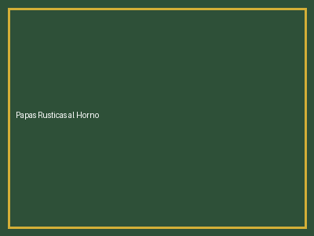
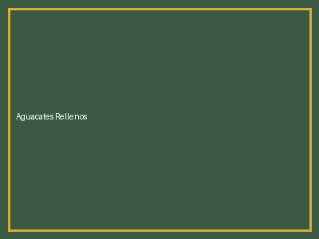
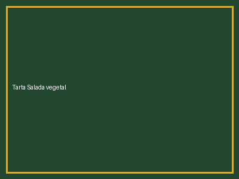
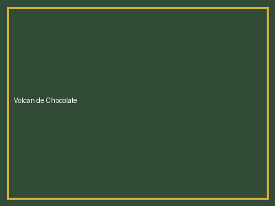
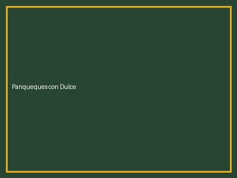

Catálogo de Recetas
Seleccione una categoría para filtrar las recetas disponibles:

Aguacates Rellenos
Descargar PDF
Tarta Salada de Vegetales
Descargar PDF
Volcán de Chocolate
Descargar PDFTorta de Limón y Merengue
Descargar PDF
Panqueques con Dulce de Leche
Descargar PDFInformación de Contacto
Información del Mantenedor
MC
Chef Manuel Córdoba
Administrador y Creador del Sitio
Apasionado por la gastronomía internacional y la enseñanza culinaria. Este portal está dedicado a compartir recetas clásicas y modernas, organizadas para cocineros aficionados y profesionales.